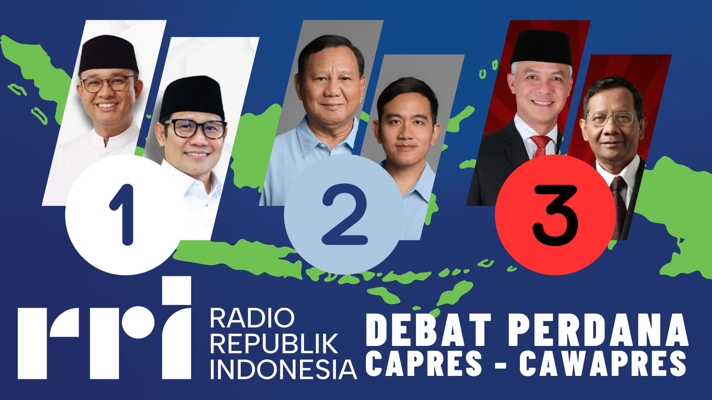

ISU MASA DEMOKRASI SAAT INI
|
PEMILU 2024
Sumber: www.nu.or.id
Isu Demokrasi saat ini adalah adanya pemilu 2024.
Pemilu 2024 adalah pemilihan umum untuk calon presiden (capres) dan wakil presiden (cawapres)
untuk Indonesia masa periode 2024 hingga 2029 untuk menggantikan Presiden Joko Widodo dan Ma’ruf Amin
yang masa periodenya akan habis, tepat pada tanggal 20 Oktober 2024. Banyak orang memperdebatkan mengenai reputasi, prestasi,
serta latar belakang dari setiap capres dan cawapres yang kurang diminati oleh masyarakat
sehingga membuat masyarakat pun harus mempertimbangkan akan pilihannya.
Pemilu 2024 akan diselenggarakan pada tanggal 14 Februari 2024,
bersamaan dengan hari Valentine.
|
KANDIDAT CAPRES-CAWAPRES
PEMILU 2024
Sumber: www.news.detik.com
Berdasarkan data Komisi Pemilihan Umum,
pasangan pertama yang mencalonkan diri adalah Anies Rasyid Baswedan-Muhaimin
Iskandar yang diusulkan oleh Partai NasDem, Partai Kebangkitan Bangsa,
dan Partai Keadilan Sejahtera. Pencalonan jatuh pada hari Kamis, 19 Oktober 2023 pada pukul 09.36 WIB.
Pasangan kedua yang mencalonkan diri adalah Ganjar Pranowo-Mahfud MD yang diusulkan oleh PDI Perjuangan,
Partai Persatuan Pembangunan, Partai PERINDO, Partai Hati Nurani Rakyat. Dengan pencalonan pada hari Kamis,
19 Oktober 2023 pada pukul 12.20 WIB. Terakhir, calon pasangan ketiga adalah Prabowo Subianto-Gibran
Rakabuming Raka yang diusulkan oleh Partai Gerakan Indonesia Raya, Partai Golongan Karya, Partai Demokrat,
Partai Amanat Nasional, Partai Solidaritas Indonesia, Partai Bulan Bintang, dan Partai Garda Republik
Indonesia pada hari Kamis, 25 Oktober 2023 pada pukul 11.20 WIB.
|
PROGRAM CAPRES-CAWAPRES PEMILU 2024

Sumber: www.rri.co.id
Visi Misi Anies Baswedan dan Muhammad Imin Iskandar adalah ... |
Visi Misi Prabowo Subianto dan Gibran Rakabuming Raka adalah |
Visi Misi Ganjar Pranowo dan Mahfud MD adalah... |
FAKTOR-FAKTOR YANG MEMENGARUHI
PILIHAN RAKYAT PADA SUATU KANDIDAT
|
1. Pembatasan Kebebasan Sipil
Pembatasan kebebasan sipil,
seperti kebebasan berpendapat, berekspresi, dan berkumpul,
merupakan salah satu ancaman terbesar bagi demokrasi. Pembatasan ini dapat
dilakukan oleh pemerintah, swasta, atau kelompok tertentu.
Pada masa ini juga, pemilu bisa menimbulkan suatu konflik atau
perdebatan dalam rumah tangga dengan perbedaan nomor yang dipilih. Selain itu,
warga yang disogok untuk memilih suatu nomor yang lalu diupah dengan besar.
|
2. Pelemahan Oposisi
Oposisi merupakan salah satu pilar penting demokrasi.
Oposisi berfungsi untuk mengawasi dan mengkritik pemerintah,
serta memberikan alternatif kebijakan bagi masyarakat.
Pelemahan oposisi dapat dilakukan melalui berbagai cara, seperti penangkapan, intimidasi, atau pemberian
fasilitas oleh pemerintah.
Selain itu, sempat ramai adanya suatu konflik saat adanya debat capres mengenai
“Pertahanan”, ”Keamanan”, ”Hubungan Internasional”, dan ”Geopolitik”.
Serta, saat debat cawapres mengenai “Pembangunan Berkelanjutan dan Lingkungan Hidup”,
“Sumber Daya Alam dan Energi”, “Pangan”, “Agraria”, “Masyarakat Adat”, dan “Desa”.
|
3. Ketidaksetaraan Ekonomi
Ketidaksetaraan ekonomi dapat memicu konflik sosial dan politik.
Ketidaksetaraan ini dapat terjadi karena berbagai faktor, seperti korupsi, monopoli,
dan ketimpangan akses terhadap pendidikan dan lapangan kerja.
Dengan contoh, salah satu kandidat pernah melakukan kasus korupsi ataupun
menggagalkan tindakan korupsi, hal tersebut dapat memengaruhi pemilihan pada rakyat.
Ataupun, memiliki pendidikan tinggi atau rendah dikarenakan kondisi finansialnya.
|
|
4. Pengaruh Teknologi
Teknologi, khususnya media sosial,
dapat digunakan untuk menyebarkan informasi palsu dan ujaran kebencian.
Hal ini dapat mengancam kebebasan sipil, demokrasi, dan tatanan sosial.
Dengan adanya media sosial, rakyat bisa berdiskusi bersama namun bisa jadi alas
terjadinya pertengkaran ataupun pertikaian mengenai perbedaan nomor yang dipilih.
Setiap jenis media sosial juga memengaruhi perbedaan nomor yang dipilih;
dengan contoh, setiap media sosial dapat lebih memfokuskan kepada satu kandidat masing-masing.
Hal ini memengaruhi dengan adanya promosi pada media sosial tertentu dan pembahasan mendalam mengenai
ketiga kandidat tersebut. Sebagian orang bisa saja memilih suatu nomor karena “FOMO"
atau hal yang kecil atau bisa saja benar-benar bijak dalam memilih.
|
5. Peran Partai Politik
Partai politik merupakan salah satu faktor penting dalam demokrasi.
Partai politik berfungsi untuk menyalurkan aspirasi rakyat dan berpartisipasi dalam pemerintahan.
Partai juga memengaruhi dengan suatu pemilihan; semisalnya,
suatu calon presiden yang ditunjuk oleh suatu partai dan memiliki reputasi baik,
tetapi berbanding terbalik dengan asal partainya. Terkadang, beberapa partai membatasi keputusan dalam
beraktivitas yang akan dilakukan oleh calon presiden dan wakil presiden yang ke depannya yang bisa
mengarah kesejahteraan masyarakat namun ditolak,
ataupun bisa jadi melakukan korupsi.
|
6. Kualitas-Reputasi Pemilu
Pemilu merupakan salah satu hal penting dalam demokrasi.
Pemilu yang bebas, jujur, dan adil merupakan kunci untuk memastikan bahwa kedaulatan dan
kesejahteraan rakyat terjaga. Hal ini bisa dianalisa dengan lulusan pendidikannya,
prestasi yang dimiliki, etika (tutur kata dan sopan santun), pengalaman (aksi yang dilakukan) selama suatu jabatan, dan lain-lain.
|
|
7. Partisipasi Masyarakat
Partisipasi masyarakat merupakan salah satu faktor penting demokrasi.
Masyarakat harus aktif berpartisipasi dalam proses demokrasi,
baik dalam pemilihan umum maupun dalam proses politik lainnya.
Seperti,
membantu program kampanye suatu kandidat (Contohnya, penyanyi Indonesia terkenal membantu
membuat sebuah lagu kampanye), bersikap aktif
mengenai berita terkini sehingga bijak memilih kandidat yang benar, dan masih banyak lagi. Hal ini juga berlaku dengan tingkat banyaknya partai politik yang mengusulkan suatu kandidat.
|
8. Pemilihan Program Setiap
Capres-Cawapres
Program yang dipilih setiap kandidat juga memengaruhi rakyat.
Rakyat pun harus mempertimbangkan program-program yang diusulkan setiap kandidat
dengan tingkat persentase perwujudan program
tersebut agar tidak berekspektasi berlebihan (mementingkan sikap realistis).
|
9. Kinerja Setiap Kandidat
Kinerja setiap capres-cawapres pada masa pekerjaan sebelumnya
juga diamati oleh rakyat dengan reputasinya selama masa tersebut.
Semisalnya, kinerja suatu kandidat di masa sebelumnya merupakan gubernur suatu provinsi akan tetapi, kinerjanya selama periode tersebut kurang memuaskan bagi rakyat area tersebut.
Lain hal seperti gubernur tersebut memiliki program-program baik namun namun gagal.
|
|
TANTANGAN DEMOKRASI
Tantangan demokrasi di Indonesia saat ini
meliputi berbagai aspek, seperti konflik berbasis perbedaan agama dan budaya,
maraknya ujaran kebencian, penurunan kualitas pelaksanaan demokrasi,
penghormatan terhadap Hak Asasi Manusia (HAM), dan
penurunan efektivitas penopang sistem demokrasi. Selain itu, kebebasan berpendapat,
isu politik, dan penggunaan identitas agama juga menjadi tantangan besar.
Pemilu 2024 dianggap sebagai momentum penting untuk memperkuat demokrasi yang
telah melemah dalam beberapa tahun terakhir. Dengan juga gender dan agama seperti
konflik yang terjadi pada Ahok 2016 akan perbedaan agama,
suku, ataupun ras sehingga menjadi minoritas dari mayoritas penduduk.
PENGARUHNYA:
-
Meningkatnya ujaran kebencian:
Konflik berbasis perbedaan agama dan budaya dapat menciptakan
ujaran kebencian yang dapat mengganggu demokrasi. Ujaran kebencian dapat
mengganggu kebebasan berpendapat dan menghalangi partisipasi politik.
-
Meningkatnya pembatasan HAM:
Konflik berbasis perbedaan agama dan budaya dapat
mengakibatkan pembatasan Hak Asasi Manusia (HAM),
seperti kebebasan berpendapat dan kebebasan agama.
Pembatasan HAM dapat mengganggu demokrasi, karena demokrasi berdasarkan pembebasan HAM.
-
Meningkatnya pembatasan pluralisme:
Konflik berbasis perbedaan agama dan budaya dapat mengakibatkan pembatasan pluralisme,
yang merupakan salah satu aspek penting dalam demokrasi.
Pembatasan pluralisme dapat mengganggu kebebasan berpendapat dan menghalangi partisipasi politik.
-
Meningkatnya pembatasan efektivitas sistem demokrasi:
Konflik berbasis perbedaan agama dan budaya dapat mengakibatkan
pembatasan efektivitas sistem demokrasi, seperti ketidaksetaraan sosial-ekonomi
dan ketidaksetaraan regional. Pembatasan efektivitas sistem demokrasi
dapat mengganggu kebebasan berpendapat dan menghalangi partisipasi politik.
-
Meningkatnya pembatasan pemerintah:
Konflik berbasis perbedaan agama dan budaya dapat mengakibatkan pembatasan pemerintah,
seperti korupsi dan ketidaksetaraan sosial-ekonomi. Pembatasan pemerintah dapat
mengganggu kebebasan berpendapat dan menghalangi partisipasi politik
|
SOLUSI TANTANGAN DEMOKRASI
Sumber: www.grid.id
-
Meningkatkan pluralisme:
Memperkuat pluralisme dapat membantu mengurangi konflik
berbasis perbedaan agama dan budaya. Pluralisme dapat mengurangi
pembatasan kebebasan berpendapat dan menghalangi partisipasi politik.
-
Meningkatkan pemahaman dan toleransi:
Memperkuat pemahaman dan toleransi dapat membantu mengurangi
konflik berbasis perbedaan agama dan budaya. Pemahaman dan toleransi
dapat mengurangi ujaran kebencana dan meningkatkan kebebasan berpendapat.
-
Meningkatkan pemahaman tentang Hak Asasi Manusia (HAM):
Memperkuat pemahaman tentang Hak Asasi Manusia (HAM) dapat membantu
mengurangi konflik berbasis perbedaan agama dan budaya. Pemahaman tentang HAM
dapat mengurangi pembatasan HAM dan meningkatkan kebebasan berpendapat.
-
Meningkatkan efektivitas sistem demokrasi:
Memperkuat efektivitas sistem demokrasi dapat membantu mengurangi
konflik berbasis perbedaan agama dan budaya. Efektivitas sistem demokrasi
dapat mengurangi pembatasan efektivitas sistem demokrasi dan meningkatkan
kebebasan berpendapat.
-
Meningkatkan pemahaman tentang konflik dan pengelolaan konflik:
Memperkuat pemahaman tentang konflik dan pengelolaan konflik dapat
membantu mengurangi konflik berbasis perbedaan agama dan budaya.
Pemahaman tentang konflik dan pengelolaan konflik dapat mengurangi
pembatasan efektivitas sistem demokrasi dan meningkatkan kebebasan berpendapat.
|